Серебро в эпоху открытий

В эпоху Великих географических открытий имело место открытие испанцами крупнейших месторождений серебра в Мексике и Южной Америке. Из Америки в Европу хлынул поток серебра.
По мнению В. И. Вернадского, только за период с 1492 по 1546 г. количество серебра в Европе увеличилось вдвое. Когда же стало добываться серебро в Пото-си, ввоз его в Европу возрос за период 1546 — 1560 гг. по сравнению с периодом 1521 — 1545 гг. в десять раз. На картах территории, на которых не ожидалось найти золота и серебра, помечались словами: «Земли, не приносящие никакого дохода». Каждые три года у берегов Центральной Америки собирался «серебряный флот» из галеонов, отвозивший в Европу — в Испанию и Нидерланды — груз драгоценных металлов, который шел в основном на чеканку монет.
В конце XV в. наиболее крупной серебряной монетой в Испании был реал (рис, 69, б). Масса этой монеты, отчеканенной от имени Изабеллы Кастильской и Фердинанда Арагонского, которые правили с 1479 г. и завершили объединение территорий Испании, около 3, 34 г, диаметр 27 мм, т. е. она была чуть меньше пражского гроша. Когда же из Нового Света стало поступать много серебра (пока еще награбленного, а не добытого из рудников), в Испании стали чеканить восьмиреало-вые монеты в 26, 7 г (рис. 69, а). Тем не менее и позднее «в Испании в те времена, когда она была самой мощной и самой богатой державой, счет вели на реалы».
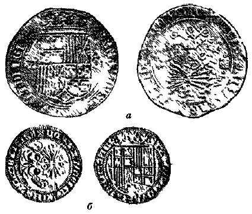
Рис. 69. Испанские реалы:
а — восьмиреановая монета;
б — один реал.
МексикаИспанцы достигли побережья Мексики в 1517 г. и завоевали государство ацтеков в 1521 г. В первые годы после ее захвата в Мексике в обращении были кусочки серебра, соответствовавшие по массе испанским монетам. По-испански масса — «песо». Это название закрепилось за 8-реаловыми монетами, а затем песо стало мексиканской денежной единицей.
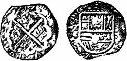
Рис. 70. Четырехреаловая «макукина» 1612 г.
Король Испании Карл I (он же — император «Священной Римской империи» Карл V) в 1535 г. издал указ об открытии монетного двора в г. Мехико. Через год там стали чеканить монеты достоинством от 1/4 до 4 реалов. Чеканка производилась вручную, тем не менее монеты имели правильную форму. Но с 1572 по 1732 г., в целях ускорения производственного процесса, в Мексике, а затем и Перу стали чеканить грубые, угловатые по форме монеты, которые назывались макукинами. Восьмиреаловая макукина соответствовала по массе и пробе европейскому талеру. С 1600 г. на макукинах стали обозначать дату, как это видно на четырехреало-вой макукине 1612 г. (рис. 70). В 1732 г. на монетном дворе в г. Мехико был установлен первый в Америке механический пресс, который позволил чеканить совершенно круглую монету с рисунком на гурте (рис. 71).
В XVIII в. все добываемое в Мексике серебро перечеканивалось на монетном дворе в г. Мехико, обозначение этого монетного двора давалось на оборотной стороне монограммой «М». Позднее эта монограмма давалась только на монетах, которые чеканились из серебра месторождений Пахука и Реаль дель Монте, расположенных наиболее близко к г. Мехико. Горы Пахука — ветвь восточной цепи Сьерра Мадре. На склонах этих гор два горных oKpyia: на юго-западе Пахука и на северо — востоке Реаль дель Монте.
Месторождение Пахука разрабатывается с 1522 г. Главная жила прослежена более чем на 15 км и достигает мощности 4,8 м. Параллельные жилы образуют систему, связанную диагональными ветвями. В Пахука, как и повсюду в Мексике, различают зону окисленных руд — «колорадос»
(окрашенных), в которой встречается самородное серебро, аргентит и галоиды серебра; за нею, ниже горизонта воды, следует зона сернистых соединений — «негрос», названная так из-за серо — синеватого цвета от тонко рассеянных галенита и различных сернистых руд серебра, образуя бонанцы по линиям, пересекающим жилы диагонально. Бонанцы здесь начинаются на глубине 100 — 150 м. Рудные столбы вытянуты по простиранию более чем на 900 м, а по вертикали короче.
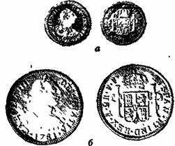
Рис. 71. Чеканенные в Мехико 1/2 реала и 2 реала.
Со времени открытия этого района на месторождениях получено около 40 000 т серебра. На каждые 200 кг серебра приходится 1 кг золота. Наиболее высокая производительность рудников достигнута в текущем столетии, чему способствует густая сеть подземных горных выработок, общая длина которых около 2 тыс. км.
Первое описание мексиканских месторождений на русском языке было дано в 1825 г. в уже упоминавшемся извлечении из книги Эли де Бомона «Взгляд на рудники». О крупнейшем мексиканском месторождении тогда писалось следующее: «Округ Гванаксуато содержит только одну главную жилу, называемую Вета-Мадре… Толщина ее от 120 до 135 футов. Она открыта и разрабатывается на пространстве 38 100 футов в длину; содержит 19 рудников, дающих ежегодно около 8000 пудов». Еще одно крупное месторождение охарак-теризовано следующими словами:
«Округ Цекатекас заключает также одну жилу, простирающуюся в серой вакке, на которой находятся многие рудники».
На рис. 72, а восьмиреаловая монета с монограммой Go (Гуанахуата), на рис. 72, б подобная монета с монограммой Zs (Секатекас).
О месторождении Вета-Мадре в Гуанахуата, разрабатываемом с 1543 г., неоднократно сообщается в последующих источниках.
К. И. Богданович, характеризуя Вета-Мадре, называет ее одной из величайших известных жил. В северо-западной своей части она пересекает сланцы под таким острым углом, что прежде считалась даже пластовой жилой. В руднике Валенсиана ее мощность достигала 150 м, а в других местах жила представляет целую систему жил мощностью от 1,5 до 10 м, соединяющихся между собой по простиранию и падению. Рудник Валенсиана был заложен в 1760 г., пояс богатых руд встречен в 1766 г. на глубине 80 м, в начале XX в. глубина разработки достигала 620 м.
И. Г. Магакьян пишет, что Вета-Мадре состоит из десятка параллельных сульфидных жил мощностью от 1,5 до 10 м, сопровождаемых штокверковым оруденением. Жилы связаны со сбросом Вета-Мадре, прослеженным на 25 км, которому подчинена знаменитая жила Вета-Мадре (материнская жила) мощностью до 20 м. Интенсивное оруденение развито на протяжении 5 км и представлено рудными столбами (бонанцами) длиною 200 — 400 м в местах интенсивного дробления. Среднее содержание серебра в руде достигает 400 — 500 г/т, золота 10 — 12 г/т.
В районе Секатекас наиболее важное месторождение было открыто в 1546 г. Жилы сосредоточены здесь на площади 15x12 км, группируясь в три больших пояса, славившихся своими бонанцами.
Если описания предыдущих жильных месторождений имеются в трудах многих ученых, то
Мапими в штате Дуранго, давшее металл для чеканки песо (рис. 72, в) с буквой «D», встречено единственный раз, хотя К. И. Богданович при этом называет его одним из наиболее важных мексиканских месторождений Оно представляет собой систему заполненных рудой трубообразных полостей мощностью до 30 м, которые в начале нашего столетия были прослежены на глубину 500 м и тогда еще не достигли уровня грунтовых вод, предположительно на глубине до 750 м. Разрабатывавшаяся руда представляла собой вторично измененный галенит — 18%, содержащий серебро в среднем 0,07% (400 — 650 г/т) и немного золота.
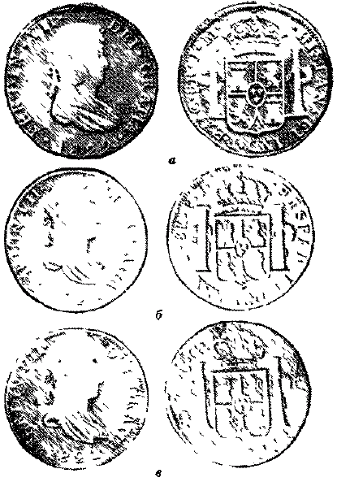
Рис. 72. Песо из серебра:
а — Гуанах\ато;
б — Секатекаса;
в — Мапими.
Мексика занимает первое место в мире по добыче серебра на протяжении нескольких столетий, выделяясь среди других стран также большими его запасами. Серебро содержится в свинцовых, свинцово-цинковых, золото-серебряных и в серебряных месторождениях, сосредоточенных в основном в районе Центральных Кордильер на высоте более 2000 м. Они относятся к субвулкани — ческому эпитермальному типу и имеют, как правило, жильную форму. Генетически они связаны с андезитами и риолитами, сильно пропилитизированными, и представляют собой сложную систему жил, вблизи которых пропилит подвергся окремнению. Главный жильный минерал — кварц, иногда аметистовидный, имеются так-же родохрозит, родонит, адуляр и кальцит, последний — наиболее молодой. Рудными являются аргентит, стефа-лит, полибазит, пирит, галенит и сфалерит; отношение золота к серебру 1 : 400; среднее содержание серебра около 350 г/т.
В. И. Смирнов отмечает, что если серебро не фиксируется в зоне окисления в форме хлоридов или в самородном состоянии, то оно переносится вниз обычно в несколько стадий, переходя в раствор и вновь осажда-ясь. Главная масса вторичного серебра при этом фик-сируется в самых низах зоны окисления. Достигая первичных руд, вторичное серебро может их обогатить. Протяжение таких зон, обогащенных вторичным серебром, в месторождениях Мексики достигало глубины 300 — 500 м.
За четыре столетия (1521 — 1945 гг.) в Мексике до-бюто 205 тыс. т серебра, что составляет около 1/3 миро-вой добычи Несмотря на длительную и интенсивную эксплуатацию, мексиканские месторождения серебра да-леко еще не истощены. Мексика по добыче серебра за-нимает и сейчас первое место в капиталистическом мире, давая в отдельные годы свыше 3000 т. Все крупные мексиканские серебряные поля распо— лагаются по прямой линии, называемой Великим Серебряным каналом Америки. Он представляет собой узкук] прямую зону, идущую на северо-запад. Эта зона в общем имеет длину 4000 км и продолжается в штат Невада. Знаменитая Комстокская жила в Неваде, где добывался электрум, дала с 1859 по 1891 г. 4820 т серебра и 214 т золота. Тогда она была выработана до-глубины 943 м; дальнейшая ее разработка приостанавливалась из-за высоких температур в глубоких забоях.
Южная АмерикаБоливия. Южноамериканские месторождения приурочены к вулканическим породам, которые прослеживаются вдоль Анд на протяжении почти 6000 км и распространены в виде как гранито — диоритов, так и излившихся липарито-трахитов и андезито-дацитов. С последними и связаны важнейшие месторождения серебра в Боливии, Перу и Чили.
До августа 1825 г. Боливия (названная так в честь С. Боливара) являлась юго-восточной частью Перу и носила название Верхнее Перу. Испанские конкистадоры завоевали государство инков в 1532 — 1533 гг. Здесь в Андах на высоте 4200 м в 1545 г. было открыто знаменитое месторождение серебра Потоси (называемое иногда по наименованию гор Серро-де-Потоси, Серро-Рико-де-Потоси, Серро-Гордо-де-Потоси), а в декабре 1546 г. основан город Потоси, где был свой монетный двор, чеканивший монеты с буквой Р, а затем с монограммой из переплетения букв Р и S (рис. 73).
Верхнее Перу было одним из главных экономических центров испанской колониальной империи.
До середины XVIII в. рудники Потоси давали около половины мировой добычи серебра, и в 1650 г. в городе насчитывалось более 160 тыс. жителей. Но в связи с хищнической эксплуатацией и истощением месторождений к концу XVIII в. начался упадок Потоси. В 1825 г. население города составляло лишь 8 тыс. чел Оживление наступило позднее — после развития добычи олова, сурьмы и вольфрама.
Потоси с 1545 г. дало 30 тыс. т серебра и является самым крупным производителем серебра в мире. Оно представляет собой потухший вулкан, расположенный среди глинистых сланцев. Самая верхняя часть горы находится в зоне окисления, и из нее добыты колоссаль-ные количества хлористого серебра, аргентита, самородного серебра. Руды представляют смесь серебряных с медными. Многие жилы обнаруживали резкие пер-вичные изменения, переходя на глубине в богатые мед-ные жилы. Мощность жил от 1 м до 5 см, по форме они сложные, сетчатые, минимальная протяженность наиболее продуктивной части рудоносной зоны на гребне горы Серро-Рико 350 м.
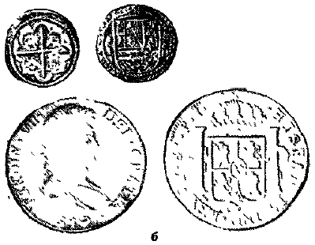
Рис. 73. Монеты из серебра Потоси:
а — реал;
б — песо.
Перу. После захвата конкистадорами этой страны она находилась под властью Испании до 1821 г.
Подсчитано, что до 1803 г. в Перу в прежних границах (т. е. вместе с Боливией) было добыто серебра на сумму 872 638 900 песо. Во время испанского владычества на монетном дворе в г. Лиме чеканились монеты с моно-граммой из букв, составлявших название этого города (рис. 74, а).
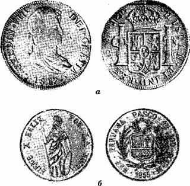
Рис. 74. Монеты Перу:
а — чеканенные в Лиме;
б — чеканенные в Паско.
На территории Перу разрабатывались месторождения Серро-де-Паско, Морокоча и др. Только в 1851 — 1875 гг. из них было добыто 1790000 кг серебра.
Серро-де-Паско связано с рядом соединенных между собой массивных андезитовых лакколитов в форме штоков диаметром по несколько километров. Рудоносные жилы расположены в основном по периферии изверженной массы. По глубине в жилах различают несколько зон: «пакос», соответствующая «колорадос» Мексики, содержание серебра здесь около 500 г/т; «бронзес» — от присутствия пирита и халькопирита, который серебрист; «павонадос» — с сернистыми соединениями серебра, содержащими серебро 8 — 9 кг/т; зона свинцовых минералов с содержанием серебра от 1 до 5 кг/т. С глубиной жилы переходят в медные. Некоторое время на руднике Паско существовал монетный двор, чеканивший монеты (рис. 74,6).
Чили.Испанские конкистадоры вторглись на тер-риторию Чили в 30-х годах XVI в. Однако серебро здесь стали добывать лишь в 1692 г., и к 1902 г. его было получено 7988 т.
К. И. Богданович указывает, что чилийские месторождения серебра расположены по восточному склону Береговых Кордильер среди юрских известняков меридионального простирания, пояс которых еще дальше к востоку ограничивается Андами. Наиболее крупные месторождения расположены в пустыне Атакама около Чаньяркильо (Чанарцилле) в 80 км к югу от г. Копиа-по — главного города северной части Чили, в рудном округе Караколес в той же пустыне Атакама и в провинции Кикимбо. Каждое из месторождений представляет систему жил мощностью от 1 до 10 м.
Во времена испанского владычества (война за независимость Чили происходила в 1810 — 1817 гг.) серебро перечеканивалось в монету в г. Сант-Яго, знак монетного двора — S перед номиналом монеты. На лицевой стороне этой четырехреаловой монеты надпись — «Фердинанд VII, божьей милостью» и дата 1808 (рис. 75); изображен же на ней Карл IV; видимо, известие о смене короля поступило без его портрета.
Наиболее крупными являются месторождения округа Чаньяркильо, открытого в 1832 г., из которых получено серебра на 100 млн. долларов. В годы подъема о 1860 по 1885 г. серебра было добыто около 2500 т. От этого периода (в котором происходила еще одна война с Испанией) сохранилось интересное песо (рис. 76), отчеканенное в г. Копиапо. Мощность жил с первичным се — ребром здесь колеблется от нескольких сантиметров до 1 м, однако руды месторождений этого района обогащены серебром за счет вторичных процессов до 3 — 7 кг/т, Встречаются крупные самородки почти чистого серебра массой до 100 кг.
В районе Кикимбо серебро добывается также и из медных руд, где его содержится до нескольких процентов в «светлой меди». Здесь же встречены месторождения серебряной амальгамы. Например, в руднике Арк-верко за первые 15 лет разработки добыто 45 т серебра из амальгамы. Месторождения «благородной серебро-Медной формации» давали 160 т серебра и 30000 т меди в год.
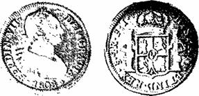
Рис. 75. Четырехреаловая монета, чеканенная в Сант-Яго.
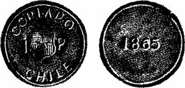
Рис. 76. Песо, чеканенное в Копиапо.
В. И. Вернадский отмечает, что в XVI — XVIII вв. богатейшие скопления самородного серебра (иногда в рудах «пакос» и «колорадос») поддерживали легенды о неимоверных богатствах Нового Света этим благородным металлом, но и там в конце концов самородное серебро явилось ничтожной по размерам частью серебряных руд.
В. И. Смирнов, указывая на связь месторождений серебра Южной Америки и открытых позднее североамериканских, пишет, что в Северной Америке скрытые разломы фундамента иногда отчетливо трассируются в породах верхнего структурного яруса цепями гидротермальных месторождений, нередко секущих под углом генеральный план геологических структур провинции. Если продолжить эту линию к юго-востоку до южноамериканского берега, то можно заметить, что она довольно точно совпадает с большой серебряной полосой Перу и Боливии.
Песо— доллар — крона. Американское серебро повлияло на экономику Испании. К. Маркс по этому поводу цитирует: «Если бы Испания никогда не владела рудниками Мексики и Перу, то ей никогда не понадобился бы хлеб из Польши».
В XVIII и XIX вв. мексиканские и южноамериканские восьмиреаловые монеты (песо или пиастры) завоевали большой авторитет в странах Востока, торговавших с Филиппинами, которые были испанской колонией. С другой стороны, эти же монеты были распространены в Северной Америке и южноамериканских государствах, не имевших своего серебра. Наиболее простое применение они нашли в Бразилии, где на песо сделали надчекан, свидетельствующий, что это монета в 960 рейс (рис. 77). В США они сперва использовались в натуральном виде, а затем шли в переплавку на изго— товление долларов.
В 1612 г. голландцы образовали в Северной Америке колонию Новые Нидерланды, а в 1626 г. заложили г. Новый Амстердам. С голландскими колонистами туда попал и далер (голландское произношение талера), который на местном диалекте стали произносить как «доллар». Известно, что в 1664 г. англичане захватили Новый Амстердам и переименовали его в Нью-Йорк, вытеснив голландцев с Атлантического побережья. В обращение здесь был введен фунт стерлингов. Но доллар не исчез. Когда в результате войны 1775 — 1783 гг. были образованы Соединенные Штаты Америки, доллар был принят в качестве денежной единицы нового государства. В 1786 г. конгресс США установил серебряное содержание доллара в 24, 34 г чистого серебра. Это было чуть меньше, чем весила восьмиреаловая монета. В качестве условного обозначения доллара в отличие от песо стали применять знак в виде перечеркнутой двумя вертикальными линиями восьмерки 8.
Но доллар чеканили и в Англии. Внутри Англии с XVI в. чеканились кроны, соответствовавшие европейскому талеру, однако после того как «владычица морей» захватила в свои руки торговлю с Востоком, где население привыкло к восьмиреаловым монетам, англичане стали чеканить «торговый доллар» по массе и пробе мексиканского или перуанского песо. Однако эти доллары появились позднее, когда бывшие испанские колонии стали свободными государствами и чеканили свою монету, как, например, отчеканенная в Гуанахуате восьмиреаловая монета 1895 г. Мексиканской республики (рис. 78) с иероглифами «чопами», удостоверяющими их полноценность (наложенными в данном случае между первым и вторым, и вторым и третьим правыми большими лучами).
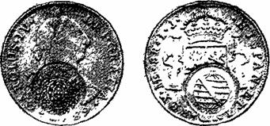
Рис. 77. Песо с бразильской надчеканкой.
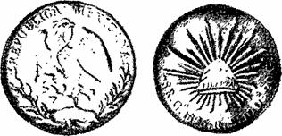
Рис. 78. Песо, чеканенное в Гунахуато в 1895 г.
В этой связи интересно введение первых монет в Новом Южном Уэльсе (в Австралии). Капитан Кук открыл эту ранее неизвестную землю и дал ей наименование еще в 1770 г, но только 18 мая 1788 г. туда прибыла эскадра, доставившая первых поселенцев — 778 сосланных преступников и 300 военных и чиновников, которые поселились близ нынешнего города Сиднея. В 1813 г. первая крупная экспедиция в глубь страны преодолела Голубые горы и значительно увеличила территорию первой и главной колонии Англии в Австралии. Для населения выросшей колонии потребовалось установить денежное обращение, и правительство Англии решило для этой цели использовать песо, после вырубки в центре каждой монеты большого отверстия и нанесения новых надписей, которые должны были убедить владельцев, что в их руках настоящие пятишиллинговые кроны (рис. 79). И колонисты Австралии, как вынужденные так и добровольные, оказывались меркантилистами поне — воле, поскольку их серебряные пятишиллинговые монеты, хотя они имели массу около 21 грамма, т. е. на 12% ниже, чем положено по обозначенному на них номиналу (если сравнивать с долларом — песо), не могли быть вывезены и годились для обращения только в Новом Южном Уэльсе.
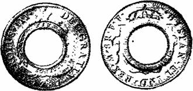
Рис. 79. Песо, надчеканенное для Австралии.
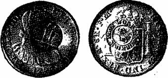
Рис. 80. Песо, надчеканенное для Шотландии.
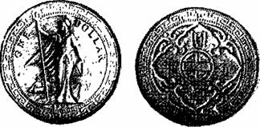
Рис. 81. Английский торговый доллар.
Несколько другой вариант комбинаций с песо применили владельцы горно-металлургического предприятия в Мьюркерке в Шотландии. Они сделали на песо (рис. 80) надчеканку нового номинала в 5 шиллингов и 6 пенсов, искусственно завысив его на 10%, и выплачивали этими песо заработную плату своим рабочим. Такая монета по обозначенному на ней номиналу приниматься нигде не могла, что приносило владельцам предприятия большие дополнительные доходы за счет увеличения торгового оборота и завышенных цен.
В XIX веке Англия за счет ограбления колоний превратилась в богатейшую державу мира.
Пришлось ради престижа перечеканенные испанские пиастры и облегченные неполноценные кроны — доллары постепенно из обращения изъять и на замену им отчеканить английский торговый доллар (рис. 81), который принимался в обращение в тех странах и колониях, где денежные системы были построены ранее на базе песо мексикан-ской чеканки.